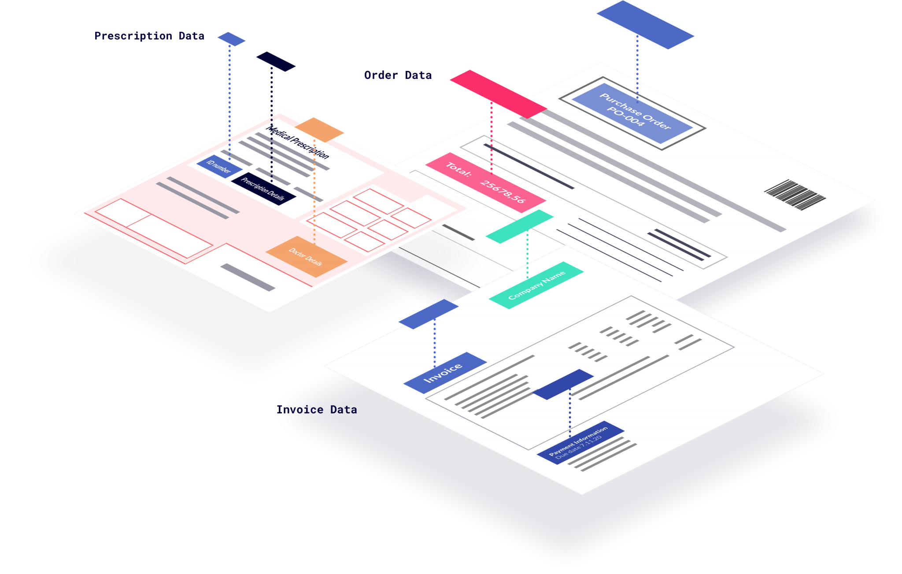
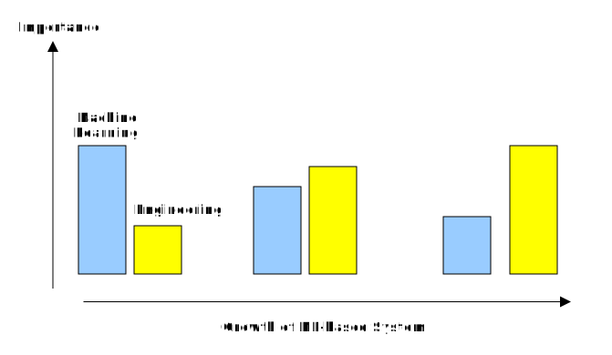
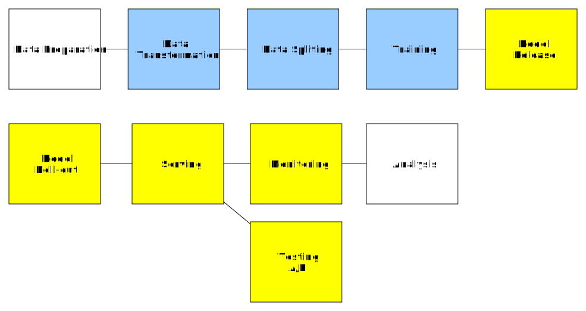
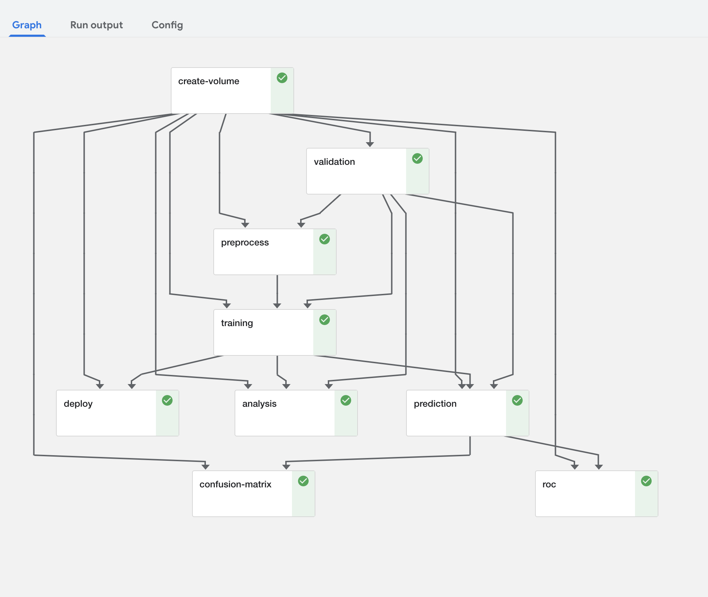
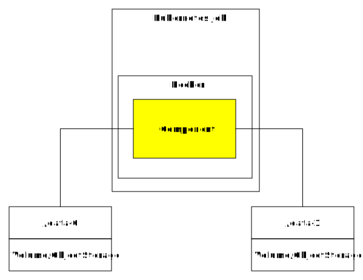
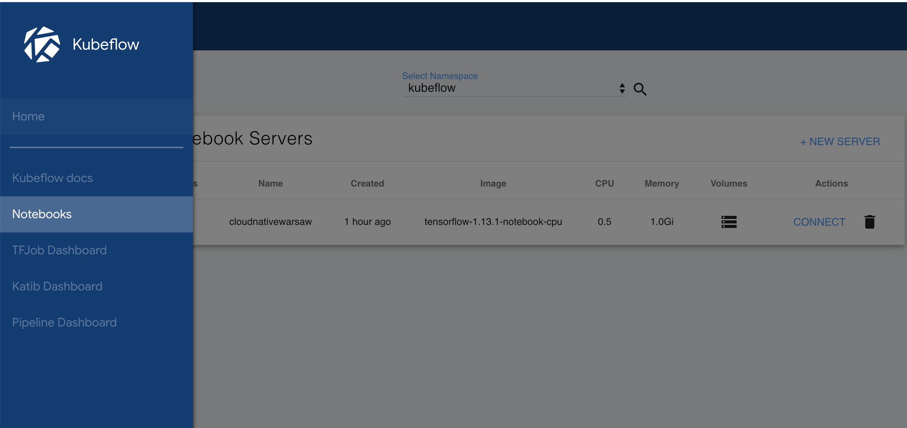
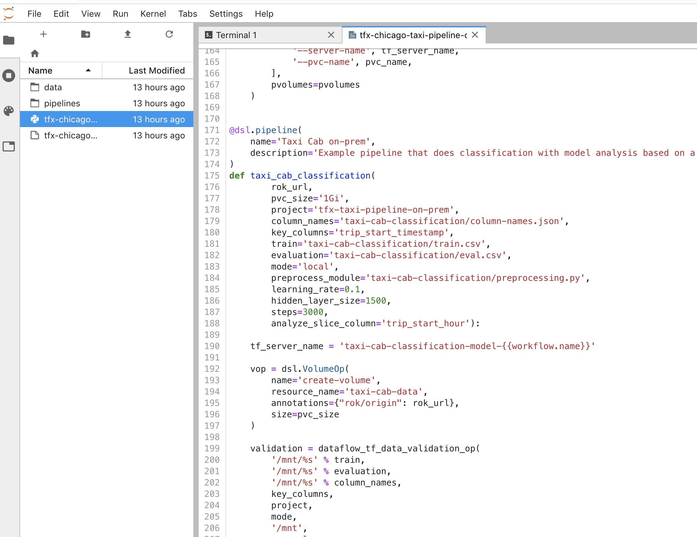
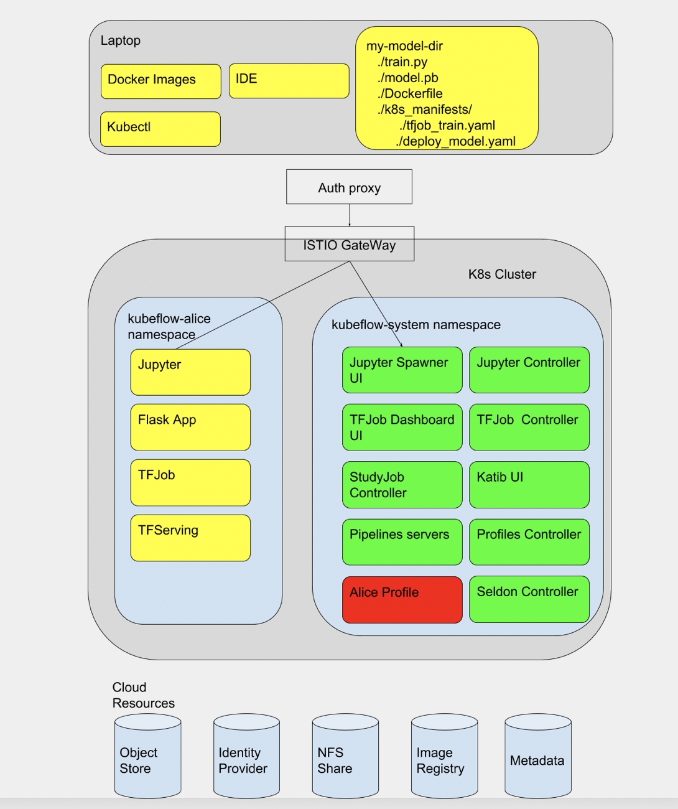
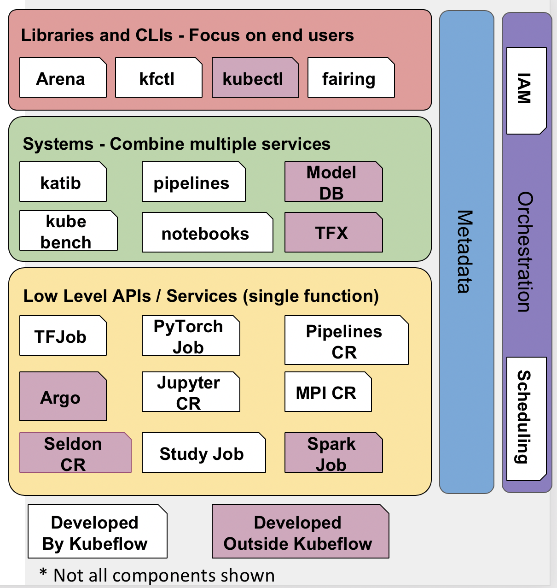

Wojciech Barczyński [Head of Engineering]
SMACC.io | Hypatos.ai
Wojtek Barczynski
- Software Developer
- System Engineer
- Head of Engineering at hypatos.ai and SMACC.io
Hypatos / SMACC.io
- Fintech Machine Learing
- Data capturing from document
- Validation
- Automation
- Deep learning

Hypatos / SMACC.io
CloudNative: Prometheus, Grafana, Fluentd, Grafana Loki
Machine Learning
Big Companies

Machine Learning
ML pipeline
Look a lot like
Continuous Integration / Deployment
ML pipeline
What did we lean from XX years of CD/CI?
What we leant from XX years of CD/CI?
Nobody likes it
Kubeflow
- Easy the pain
- Unified experience
- One to rule them all
- Low bar; High ceiling
Focus
- Scalability
- Composition
- Portability
Focus
- Enable Dev(ML)ops culture
Demo

Heart: pipelines
default: https://argoproj.github.io/
Gears: component
User Experience: notebook
User Experience: notebook
Python SDK
- Let data scientist and engineers work together
YAML vs Python SDK
apiVersion: argoproj.io/v1alpha1
kind: Workflow
metadata:
generateName: charts-of-accounts-
spec:
arguments:
parameters:
- name: aws-cli-image
value: "pbsmacc/aws-cli:latest"
- name: prepare-dataset-image
value: "smaccio/accounting-charts-prepare-dataset:v0.2.0"
- name: trainer-image
value: "smaccio/accounting-charts-classifier:v0.2.0"
- name: minio-client-image
value: "minio/mc:RELEASE.2019-05-01T23-27-44Z"
- name: k8s-kubectl-image
value: "smaccio/k8s-kubectl:1.12.3"
- name: k8s-cluster
value: "production"
entrypoint: charts-of-accounts
imagePullSecrets:
- name: regsecret
templates:
- name: charts-of-accounts
steps:
- - name: download-backup
template: download-backup
- - name: prepare-dataset
template: preparing-dataset
arguments:
artifacts:
- name: backup
from: "{{steps.download-backup.outputs.artifacts.backup}}"
- - name: train-models
template: train-models
arguments:
artifacts:
- name: dataset
from: "{{steps.prepare-dataset.outputs.artifacts.dataset}}"
- - name: export-models
template: export-models
arguments:
artifacts:
- name: models
from: "{{steps.train-models.outputs.artifacts.models}}"
- - name: deploy-models
template: deploy-models
# This step downloads latest backup for accounting (from aws s3)
# Outputs a file for further processing
- name: download-backup
container:
Python SDK
@dsl.pipeline(
name='Taxi Cab on-prem',
description='Exar.'
)
def taxi_cab_classification(
training = tf_train_op(
preprocess.output,
validation.outputs['schema'],
learning_rate,
hidden_layer_size,
steps,
'tips',
'/mnt/%s' % preprocess_module,
'/mnt',
vop.volume
)
} Python SDK
def kubeflow_deploy_op(model: 'TensorFlow model', tf_server_name, pvc_name,
pvolumes, step_name='deploy'):
return dsl.ContainerOp(
name=step_name,
image='gcr.io/ml-pipeline/ml-pipeline-kubeflow-deployer:727c48c690c081b505c1f0979d11930bf1ef07c0',
arguments=[
'--cluster-name', 'tfx-taxi-pipeline-on-prem',
'--model-export-path', model,
'--server-name', tf_server_name,
'--pvc-name', pvc_name,
],
pvolumes=pvolumes
)
More Python: Fairing SDK
- All power of kubeflow
from your local jupyter notebook - For hybird cloud
https://github.com/kubeflow/fairing
User Experience: Tensorboard

Tracking: Artifacts
- Emitted by steps as metadata

Tracking: Artifacts
- Emitted by steps as metadata
mlpipeline-ui-metadata.json

Focus on Data Scientist
- Self-service
- Provide familiar user experience and tools
- Share the knowledge
- Hide the engineering complexity
Batteries Included
Scale trainings
- TFJobs
- MPI Training
- PyTorch Training
- MXNet Training
Machine Learning
Kubeflow
- How to serve the model
- Operating service
- Observability, e.g., metric collection
Kubeflow
- Operating service
- Observability, e.g., metric collection
- Deployment strategies
- ...
One CloudNative project comes to mind - Istio.
Kubeflow
Serving
- ML Model servers
- seldon.io
- kfserving
ML Model Servers
- TFserving
- PyTorch Serving
- ...
ML Model Servers
- Minimum configuration
- Serve a given trained ML model
with Istio integration if needed
Seldon.io
- More complex use cases
Istio
- Observability Grafana
- Deployment strategies
Istio
- All served models are available with Istio
Kfserving

Kfserving
apiVersion: "serving.kubeflow.org/v1alpha2"
kind: "KFService"
metadata:
name: "xgboost-iris"
spec:
default:
predictor:
xgboost:
storageUri: "gs://kfserving-samples/models/xgboost/iris"
Architecture
Architecture
What did we decided?
- Large project with many moving parts
- Take bits that we need and keep delivering
- Invest more time into observability
We do not have such a large team
What did we pick?
- Mostly Model + Code as Software Components
- Automation project:
- Argo in YAML
- tfserving
- tensorflow_transform.beam
Deployment?
- Git-driven deployment
- Version the model and the code
we might use argo here as well
Observability
- Prometheus + Grafana
- Dedicated metric collector
Keep an eye on kubeflow
- Enterprise client projects on-prem
- Growing team
Summary
- Enable Dev(ML)Ops culture
- Hide the engineering complexity
Summary
- The learning part is the most compelling
- and self-service
Questions?
Big thanks to Piotr Brzostowski
and whole BER+WAW team.
Backup
Development
- How to handover to engineering?
- How did I trained the model X?
- Lineage and Metadata
Operation
- How the model performs in production
- Is it better?
- Which data should I add to the next training?
- Low performance → roll back
- Keep the TCO reasonable
Operation
- Observability: Prometheus, Grafana
- A/B testing: service mesh
- Serving model?